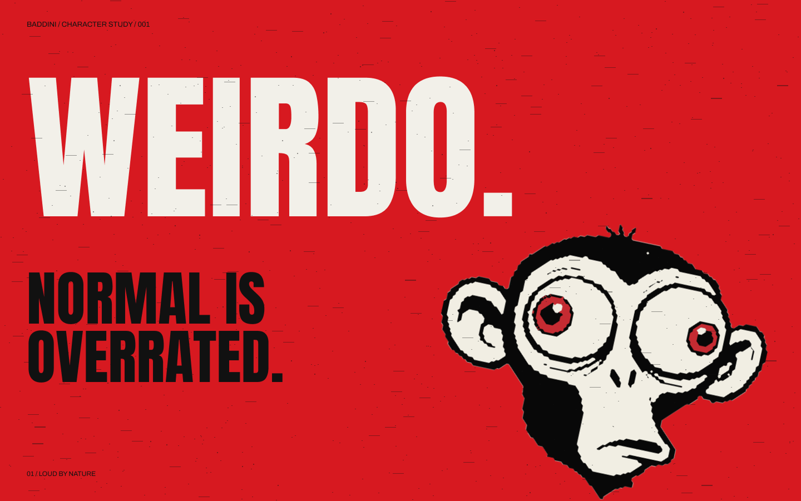
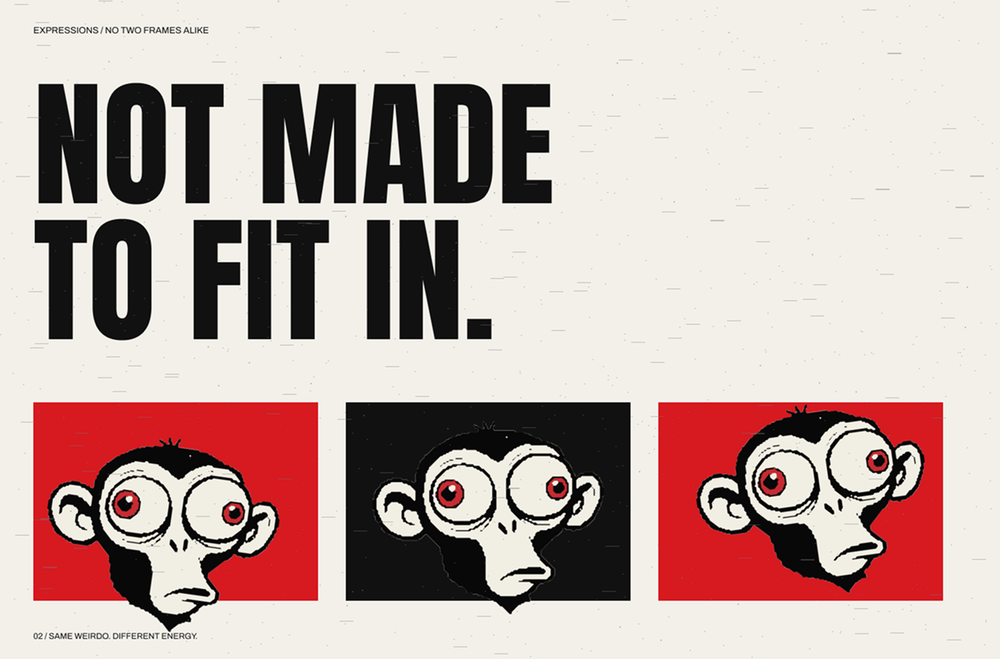
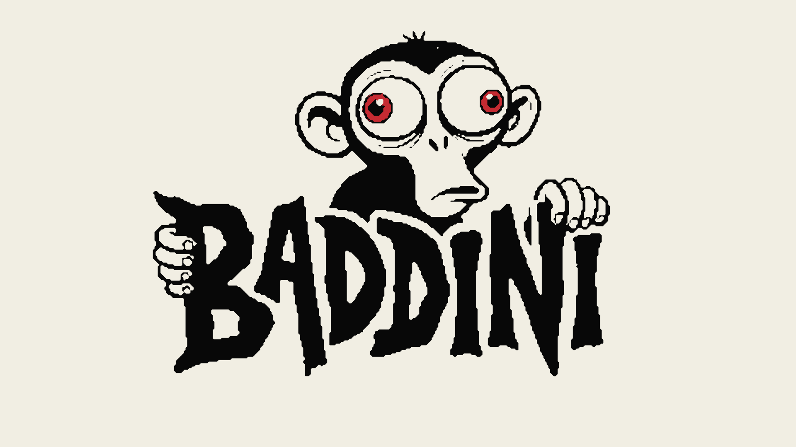

01 O essencial
Boas ideias.
Mau comportamento.
Ótimo motion.
Quem é Baddini?
Sou Bruno Baddini, motion designer, animador 2D e editor de vídeo no Rio de Janeiro, Brasil. Me formei em Desenvolvimento de Jogos Digitais pela Universidade Estácio de Sá em 2019 e tenho mais de quatro anos de experiência em motion design, animação e produção de vídeo.
Ao longo da minha carreira, trabalhei com empresas, agências de marketing digital e artistas de diferentes áreas, criando motion graphics, animações e conteúdo visual para publicidade e entretenimento. Também colaborei com artistas de rap e hip-hop, desenvolvendo e dirigindo videoclipes animados com identidades visuais fortes e estilo criativo próprio.
No último ano, trabalhei como artista de VFX e compositor para Luccas Neto, um dos maiores YouTubers do Brasil, cujo canal tem mais de 50 milhões de inscritos. Meu trabalho inclui efeitos visuais, motion graphics, composição e animação para produções de vídeo em grande volume.
- After Effects
- Toon Boom Harmony
- Premiere Pro
- Cap Cut
- Blender
- Adobe Suite CC
- Vibecoding
- Motion Designer
- +4 anos
- Animador freelancer
- +4 anos
- Atuação
- Agências, artistas, marcas e criadores
02 Trabalhos
Projetos selecionados.
03 Manifesto
Menos polimento.
Mais garra.
“Um traço bruto. Muita vida em cada quadro.”
Storyboard / Animação quadro a quadro / Composição
04 Identidade visual
Weirdo

Expressões / Nenhum quadro igual ao outro
Fora do molde.


Esse é o espírito.
Ver estudo de caso ↗